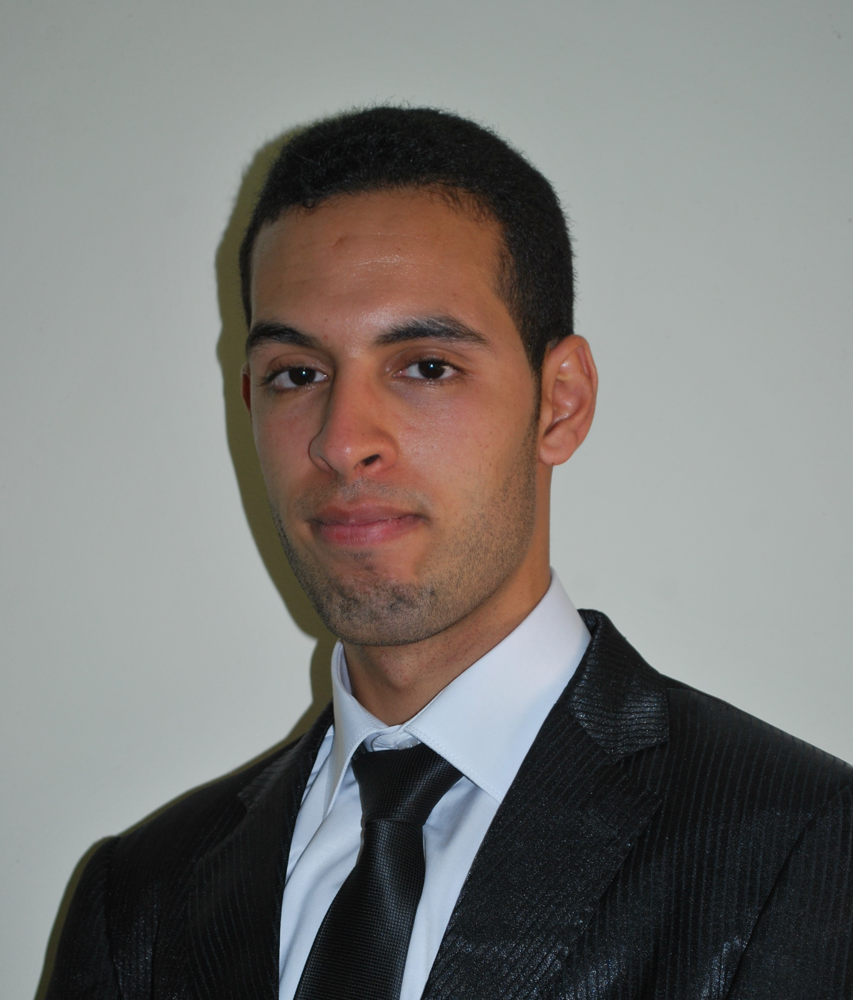

About Me
A propos de moi

I am Said Laarab, a versatile engineer graduated from the "Ecole Nationale Supérieure des Mines de Rabat" (ex: ENIM) Engineering School.
I have been passionate about computer sciences since my childhood, especially when I studied programming.
Since then, whenever I have a task or there is a simple game that can be done by code, I don't hesitate to program it. However,
my curiosity to discover how it is like to work in the industrial companies lead me to occupy the position of Quality Enginner
for some time. This experience has made me realize it is much better to work on what I really like, so I can do my best regardless of the tough conditions
which pop up every now and then. That is why, I have decided to switch over my carrer to Software Engineering where I believe I can do brilliant work.
To realize this goal, I have started learning on my own the major web development languanges : HTML 5, CSS 3 and Javascript. By the time I got familiar with
those technologies, I have started putting them into practice and sharpen my skills by building applications, which you can check in my portfolio. The last one,
is my favourite, as It leads me to learn a lot of new techniques due its complexity. I have built it to participate in a Software Engineering Contest organized by an American Start-up "AlgoExpert.io" in August 2020.
For now, I am learning the famous library of Javascript, React.js. to widen my skill set as a future Web Development Engineer.
Je m'appelle Said Laarab, je suis un Ingénieur d'Etat polyvalent de l'Ecole Nationale Supérieure des Mines de Rabat - ENSMR (ex: ENIM).
Je suis un passionné de l'informatique depuis mon enfance, surtout lorsque j'ai commencé à étudier la programmation.
Depuis, je ne rate pas l'occasion de programmer une tâche ou un simple jeu, si c'est possible. Or,
ma curiosité à découvrir le monde indutriel m'a poussé à occuper le poste d'ingénieur qualité dans une société industrielle. Cette experience m'a permis de me rendre compte que pour faire de mon mieux,
même sous des conditions contraignantes, il est indispensable de faire ce que j'aime le plus. C'est ainsi que j'ai décidé de changer ma carrière vers le domaine du Développement Informatique
où je suis sûre que je puisse réaliser des projets agréables. Pour concrétiser mon objectif, j'ai commencé à m'auto-former sur les languages basiques du Développement Web : HTML 5, CSS 3 and Javascript.
Après m'avoir familiarisé avec ces technologies, j'ai commencé à les mettre en pratique et à renforcer mes compétences en développant des applications et réalisant des sites web, comme vous pouvez
le constater à travers mon portfolio. La dernière application que j'ai developpée, et celle que j'appréciais le plus, car elle m'a permis d'apprendre énormément de techniques vu sa complexité logique.
Je l'ai developpé récemment à l'occasion d'une compétition entre Ingénieurs Développeur organisée par une start-up américaine "AlgoExpert.io".
Actuellement, je suis en train d'apprendre "React.js", la célèbre bibliothèque dédiée à Javascript, pour ainsi renforcer mes compétences en tant que futur Ingénieur en Développeur Web.